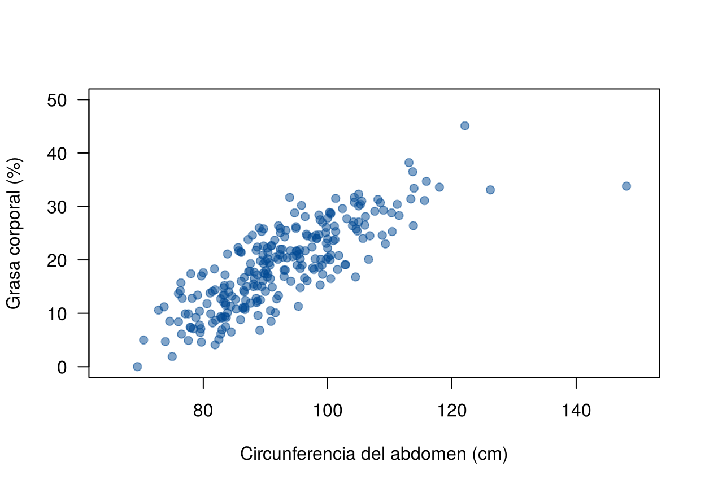
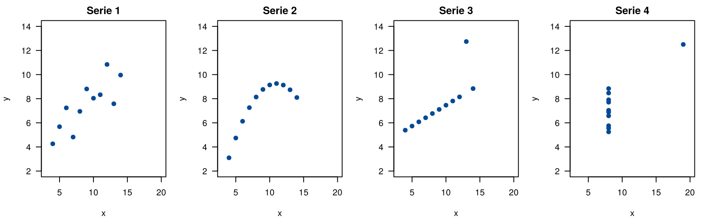
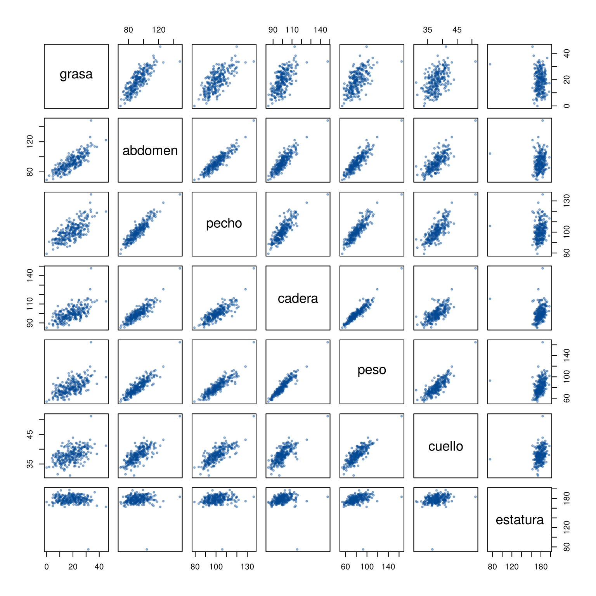
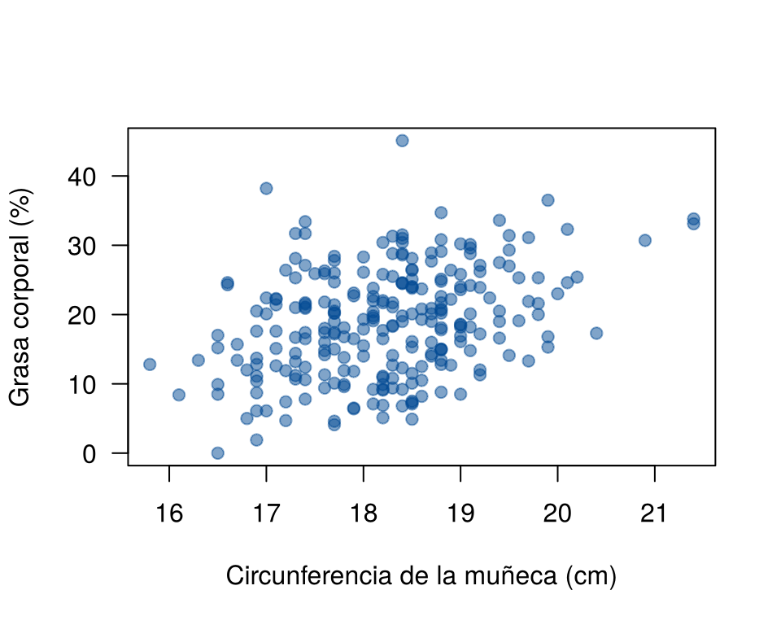

El análisis de correlación es una técnica estadística que se usa para cuantificar la relación entre dos variables cuantitativas. Su objetivo principal es medir el grado de asociación entre ellas, sin implicar una relación causal.
En este análisis se considera una variable respuesta \(Y\), cuya relación con otra variable explicativa \(X\) se estudia a partir de una muestra de \(n\) pares de observaciones:
\[ (x_1, y_1), (x_2, y_2), \ldots, (x_n, y_n) \]
El análisis permite responder preguntas como:
Según la forma de la relación, se usan distintas medidas de correlación. El coeficiente de correlación de Pearson es la más usada cuando la relación es lineal. Cuando la relación es monótona pero no lineal, o cuando hay datos atípicos, se usan los coeficientes de Spearman o Kendall (Correlación de Spearman y Kendall).
El análisis de correlación es un primer paso antes de construir un modelo de regresión: permite evaluar si conviene incluir una variable explicativa en el modelo y detectar patrones en los datos.
El análisis de correlación permite responder preguntas sobre la relación entre dos variables cuantitativas. Algunos ejemplos:
Además de evaluar si existe una relación entre las variables, el análisis de correlación permite determinar:
Estos aspectos son fundamentales para interpretar los resultados y tomar decisiones basadas en datos. Esta página presenta la covarianza y el coeficiente de correlación de Pearson, que miden la relación lineal. Los bloques de código se ejecutan en orden.
Medir la grasa corporal con precisión es costoso: el método de referencia pesa a la persona bajo el agua. Medir el abdomen con una cinta métrica toma un minuto. Si las dos medidas están muy relacionadas, la cinta métrica podría dar una buena idea de la grasa.
Toda la unidad usa este caso: 252 hombres a quienes
se les midió el porcentaje de grasa corporal con pesaje bajo el agua y
otras 13 medidas del cuerpo (Penrose, Nelson y Fisher, 1985; Johnson,
1996). Los datos vienen en el paquete faraway de
R; aquí se usa una copia con el peso en kilogramos y la
estatura en centímetros.
| Variable | Qué mide |
|---|---|
id |
Número del hombre (1 a 252) |
grasa |
Porcentaje de grasa corporal (ecuación de Brozek) |
edad |
Edad en años |
peso, estatura |
Peso en kg y estatura en cm |
cuello, pecho,
abdomen, cadera, muslo,
rodilla, tobillo, biceps,
antebrazo, muneca |
Circunferencias en cm |
La unidad usa cuatro archivos. Descárguelos y guárdelos en una
carpeta llamada data dentro de su proyecto de
RStudio (Proyecto
en RStudio):
| Archivo | Contenido | Páginas |
|---|---|---|
| grasa.csv | Grasa corporal y medidas del cuerpo de 252 hombres | Casi todas |
| paises.csv | Fecundidad, PIB por habitante y otros indicadores de 213 países y territorios | Spearman y Kendall, Transformaciones, Varianza no constante |
| condenas.csv | Condenas de mujeres y fecundidad en Canadá, 1931 a 1968 | Revisión de los supuestos |
| peso.csv | Peso medido y peso reportado de 200 personas | Caso integrador |
Con el proyecto abierto, cada archivo se lee con
read.csv() y la ruta relativa
"data/nombre.csv".
En las salidas de esta unidad los números se muestran sin notación
científica: por ejemplo, 0.00012 y no 1.2e-04. Para obtener
lo mismo en su computador, ejecute una vez al inicio de cada sesión:
options(scipen = 999)Un valor p muy pequeño se muestra entonces con muchos ceros, como
< 0.00000000000000022: se lee como “prácticamente
cero”.
grasa <- read.csv("data/grasa.csv")
dim(grasa)[1] 252 15head(grasa[, c("id", "grasa", "abdomen", "peso", "estatura")]) id grasa abdomen peso estatura
1 1 12.6 85.2 70.0 172.1
2 2 6.9 83.0 78.6 183.5
3 3 24.6 87.9 69.9 168.3
4 4 10.9 86.4 83.8 183.5
5 5 27.8 100.0 83.6 181.0
6 6 20.6 94.4 95.4 189.9summary(grasa[, c("grasa", "abdomen")]) grasa abdomen
Min. : 0.00 Min. : 69.40
1st Qu.:12.80 1st Qu.: 84.58
Median :19.00 Median : 90.95
Mean :18.94 Mean : 92.56
3rd Qu.:24.60 3rd Qu.: 99.33
Max. :45.10 Max. :148.10 La pregunta de la unidad es: ¿cómo se relaciona la grasa corporal con la circunferencia del abdomen?
Antes de calcular cualquier indicador, se grafica. El gráfico de dispersión muestra la dirección (positiva o negativa), la forma (recta o curva), la fuerza (qué tan cerca están los puntos de una línea) y los puntos inusuales.
plot(grasa ~ abdomen, data = grasa, pch = 19, col = "#034A9480", las = 1,
xlab = "Circunferencia del abdomen (cm)", ylab = "Grasa corporal (%)",
xlim = c(65, 150), ylim = c(0, 50))
Grasa corporal y circunferencia del abdomen en 252 hombres.
La relación es positiva (a más abdomen, más grasa), aproximadamente recta y bastante fuerte. Hay un hombre con un abdomen mucho mayor que el resto (148 cm), y uno con 0 % de grasa abajo a la izquierda, que no es posible en una persona viva. Los dos se estudian en la página Puntos influyentes.
La covarianza muestral resume si las dos variables tienden a estar por encima (o por debajo) de su media al mismo tiempo:
\[ s_{xy} = \frac{1}{n - 1} \sum_{i=1}^{n} (x_i - \bar{x})(y_i - \bar{y}) \]
x <- grasa$abdomen
y <- grasa$grasa
n <- length(x)
sum((x - mean(x)) * (y - mean(y))) / (n - 1)[1] 68.008cov(x, y)[1] 68.008La covarianza tiene un problema: sus unidades son el producto de las unidades de las dos variables (aquí, cm × puntos porcentuales), así que su tamaño no dice si la relación es fuerte o débil. Si el abdomen se midiera en metros, la covarianza se dividiría por 100 sin que la relación cambie.
El coeficiente de correlación de Pearson divide la covarianza por las dos desviaciones estándar, y así queda sin unidades:
\[ r = \frac{s_{xy}}{s_x \, s_y}, \qquad -1 \le r \le 1 \]
cov(x, y) / (sd(x) * sd(y))[1] 0.8137062cor(x, y)[1] 0.8137062| Valor de \(r\) | Significado |
|---|---|
| \(r = 1\) | Todos los puntos están sobre una recta creciente |
| \(r\) cercano a 1 | Relación lineal positiva fuerte |
| \(r\) cercano a 0 | No hay relación lineal (puede haber otra) |
| \(r\) cercano a −1 | Relación lineal negativa fuerte |
| \(r = -1\) | Todos los puntos están sobre una recta decreciente |
Con \(r = 0.81\), la relación lineal entre abdomen y grasa es positiva y fuerte. No hay cortes universales para llamar débil, moderada o fuerte a una correlación: dependen del área. En medidas físicas, 0.8 es común; en ciencias sociales, 0.3 ya puede ser importante.
\(r\) solo mide relaciones lineales. Las cuatro series del cuarteto de Anscombe (1973) tienen la misma media, la misma varianza y la misma correlación, \(r = 0.82\), pero son muy distintas:
sapply(1:4, function(k) cor(anscombe[[paste0("x", k)]], anscombe[[paste0("y", k)]]))[1] 0.8164205 0.8162365 0.8162867 0.8165214par(mfrow = c(1, 4), mar = c(4, 4, 2, 1))
for (k in 1:4) {
plot(anscombe[[paste0("x", k)]], anscombe[[paste0("y", k)]], pch = 19, col = "#034A94",
xlim = c(3, 20), ylim = c(2, 14), xlab = "x", ylab = "y", main = paste("Serie", k), las = 1)
}
Cuarteto de Anscombe: cuatro relaciones distintas con la misma correlación.
La lección es la de toda la unidad: siempre se grafica antes de calcular.
Otros cuidados:
El valor \(r\) es una estimación de la correlación de la población, \(\rho\). Para decidir si hay evidencia de relación lineal en la población se prueba
\[ H_0: \rho = 0 \qquad \text{frente a} \qquad H_1: \rho \neq 0 \]
con el estadístico
\[ t = \frac{r\sqrt{n - 2}}{\sqrt{1 - r^2}}, \]
que sigue una distribución \(t\) con
\(n - 2\) grados de libertad si \(H_0\) es cierta y los datos vienen de una
normal bivariada (cada par \((x, y)\) es una observación de una
distribución normal en dos dimensiones). La función
cor.test() hace la prueba y da un intervalo de confianza
para \(\rho\):
cor.test(grasa$abdomen, grasa$grasa)
Pearson's product-moment correlation
data: grasa$abdomen and grasa$grasa
t = 22.134, df = 250, p-value < 0.00000000000000022
alternative hypothesis: true correlation is not equal to 0
95 percent confidence interval:
0.7672855 0.8516445
sample estimates:
cor
0.8137062 El valor p es prácticamente cero: hay evidencia fuerte de relación lineal positiva. El intervalo del 95 % para \(\rho\) va de 0.77 a 0.85.
Con muestras grandes, cualquier correlación pequeña resulta significativa. Por eso se reporta \(r\) con su intervalo, no solo el valor p.
cor() aplicada a una tabla da la matriz de
correlaciones: la correlación de cada par de variables.
medidas <- grasa[, c("grasa", "abdomen", "pecho", "cadera", "peso", "cuello", "estatura")]
round(cor(medidas), 2) grasa abdomen pecho cadera peso cuello estatura
grasa 1.00 0.81 0.70 0.63 0.61 0.49 -0.09
abdomen 0.81 1.00 0.92 0.87 0.89 0.75 0.09
pecho 0.70 0.92 1.00 0.83 0.89 0.78 0.13
cadera 0.63 0.87 0.83 1.00 0.94 0.73 0.17
peso 0.61 0.89 0.89 0.94 1.00 0.83 0.31
cuello 0.49 0.75 0.78 0.73 0.83 1.00 0.25
estatura -0.09 0.09 0.13 0.17 0.31 0.25 1.00La primera columna muestra que el abdomen es la medida más relacionada con la grasa, seguida del pecho y la cadera. La estatura casi no se relaciona con la grasa. Por eso el resto de la unidad usa el abdomen.
pairs() grafica todos los pares a la vez:
pairs(medidas, pch = 19, cex = 0.5, col = "#034A9460")
Gráficos de dispersión de cada par de medidas.
La fila de la estatura muestra un hombre de 74.9 cm, que es casi seguro un error de digitación (Johnson, 1996). Antes de interpretar, conviene revisar los valores imposibles, como se hizo en la Unidad 1.
| Problema | Causa | Solución |
|---|---|---|
| Concluir que no hay relación porque \(r\) es cercano a 0 | \(r\) solo mide relaciones lineales | Graficar: puede haber una curva |
| Interpretar el tamaño de la covarianza | La covarianza depende de las unidades | Usar la correlación |
| Concluir causa a partir de \(r\) | Puede haber una tercera variable | Hablar de asociación; la causa la sustenta el diseño del estudio |
| Calcular \(r\) sin graficar | Un punto extremo puede crear o esconder la relación | Graficar siempre antes |
| Reportar solo el valor p | Con \(n\) grande, todo es significativo | Reportar \(r\) y su intervalo de confianza |
Pase el abdomen a metros y la grasa a proporción (dividir por 100). ¿Qué pasa con la covarianza? ¿Y con la correlación?
cov(grasa$abdomen / 100, grasa$grasa / 100)[1] 0.0068008cor(grasa$abdomen / 100, grasa$grasa / 100)[1] 0.8137062La covarianza se divide por \(100 \times 100 = 10\,000\). La correlación no cambia, porque no tiene unidades.
Calcule la correlación entre la circunferencia de la muñeca y la grasa, con su intervalo de confianza. ¿Es más fuerte o más débil que la del abdomen? Grafique antes de responder.
plot(grasa ~ muneca, data = grasa, pch = 19, col = "#034A9480", las = 1,
xlab = "Circunferencia de la muñeca (cm)", ylab = "Grasa corporal (%)")
Grasa corporal y circunferencia de la muñeca.
cor.test(grasa$muneca, grasa$grasa)$estimate cor
0.3475728 cor.test(grasa$muneca, grasa$grasa)$conf.int[1] 0.2340526 0.4517430
attr(,"conf.level")
[1] 0.95La relación es positiva pero más débil (\(r = 0.35\) frente a 0.81). La muñeca depende más del tamaño de los huesos que de la grasa.
Con los datos de la serie 4 de Anscombe, calcule la correlación con todos los puntos y sin el punto de \(x = 19\).
cor(anscombe$x4, anscombe$y4)[1] 0.8165214sin_punto <- anscombe$x4 != 19
cor(anscombe$x4[sin_punto], anscombe$y4[sin_punto])[1] NASin ese punto, todas las \(x\) valen
8 y la correlación no se puede calcular (NA): la desviación
estándar de \(x\) es cero. Toda la
correlación de la serie viene de un solo punto.
Última revisión: 9 de noviembre de 2026.